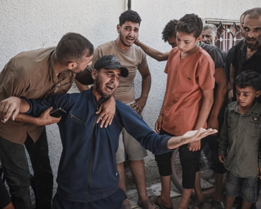
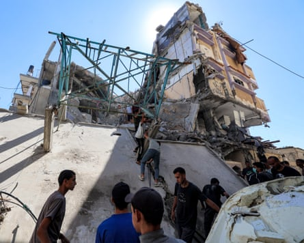

Israeli warplanes launched a wave of strikes in Gaza on Sunday, killing at least 38 Palestinians, according to hospital officials, as talks over a ceasefire in the devastated territory reached a critical point.
Officials at Nasser hospital in the southern city of Khan Younis said 18 people were killed by strikes in al-Mawasi, a nearby coastal area that is crowded with tented encampments of those displaced by fighting elsewhere.
According to the health ministry in Gaza , 80 people were killed and 304 wounded in Israeli attacks there over the last 24 hours.
Israel has escalated its offensive in recent days, as momentum gathers in negotiations over a US-sponsored proposal that could lead to an end to the 21-month war.
Speaking as he left Israel for talks with Donald Trump in Washington on the ceasefire and other regional issues, Benjamin Netanyahu said late on Sunday that he was determined to ensure the return of hostages held in Gaza and to remove the threat of Hamas to Israel, reiterating promises he has made repeatedly throughout the conflict.
He also spoke of regional opportunities in the aftermath of Israel’s brief war with Iran last month, which was ended by a US-imposed ceasefire after Trump sent bombers to attack three Iranian nuclear sites.
“We have never had such a friend in the White House … We have already changed the face of the Middle East beyond recognition, and we have an opportunity and the ability to change it further and to enable a great future for the state of Israel, the people of Israel and the entire Middle East,” Israel’s prime minister told reporters at the airport.
A draft of the proposed agreement for a 60-day pause in hostilities seen by the Guardian specifies that Trump himself would announce a deal, which some hoped could be concluded before his meeting with Netanyahu scheduled for Monday evening US time.
Relatives of Palestinians killed after Israeli airstrikes on a school in the Shati refugee camp in Gaza City on Sunday.Photograph: Anadolu/Getty Images
On Tuesday, the US president said in a social media post that Israel had agreed “to the necessary conditions to finalize” an agreement, while Hamas said on Friday it had responded in a “positive spirit” to the US-backed proposal.
Israel on Saturday rejected a series of changes to the proposed deal demanded by Hamas, and Netanyahu stressed on Sunday that negotiators he had sent to a new round of indirect ceasefire talks in Qatar had “clear instructions” to achieve an agreement but without making concessions.
“We are working to achieve the much-discussed deal, on the conditions that we have agreed to … I believe that the conversation with President Trump can definitely help advance that result which we are all hoping for,” the Israeli leader said.
In Gaza City, there was tension, hope and anxiety.
“We pray to God that the ceasefire succeeds this time. Even though we’ve heard so many times before about a possible truce, it always fails, and now we’re afraid to even feel hopeful,” said Abu Adham Abu Amro, 55.
“There is no more trust left because of the ongoing disagreements between the Palestinian and Israeli sides – one side agrees, the other refuses, and so it goes.”
The war in Gaza was triggered on 7 October 2023 when Hamas launched a surprise attack into southern Israel, killing about 1,200, mostly civilians, and taking 251 hostages. Hamas is still holding approximately 50 hostages but fewer than half are thought to be alive.
In Israel, public pressure is mounting for a deal to free all the hostages still in Gaza.
Vicky Cohen, the mother of a soldier being held by Hamas in Gaza, said Israelis could only recover from the trauma of the 2023 attack if all the hostages were returned.
“Israelis care for each other … we will not leave anyone back there and we will bring them all back. These are the values that Israel is based on. I hope our prime minister is brave enough to do the right thing,” she said.
Israel’s military offensive in Gaza has killed more than 57,000 Palestinians, displaced almost all of the 2.3 million population and reduced much of the territory to rubble.
The Israel Defense Forces (IDF) had no immediate comment on the individual strikes in Gaza reported on Sunday, but said 130 targets were struck across the territory in the previous 24 hours, including militants, Hamas command and control structures, storage facilities, weapons and launchers.
People remove a metal scaffolding from a building hit by Israeli bombardment in the Nuseirat camp in the central Gaza Strip.Photograph: Eyad Baba/AFP/Getty Images
The IDF also said a strike on a cafe in Gaza City last Monday that killed or wounded about 100 people, including many women, children and elderly people, had targeted a meeting of senior Hamas commanders. Experts have said the strike, which involved a 500lb bomb dropped on to a terrace crowded with waiters, families and students, could constitute a war crime.
IDF sources told the Times of Israel newspaper that Ramzi Ramadan Abd Ali Salah, who led Hamas’s naval force in northern Gaza, and several other Hamas commanders died in the attack.
Hundreds of Palestinians have been killed by Israeli soldiers in recent weeks as they have gathered in large crowds to get food from looted convoys, from distributions by the UN, or from sites run by the Gaza Humanitarian Foundation, a controversial US- and Israel-backed private organisation that started operations last month.
On Saturday, Israel’s security cabinet said it would allow aid organisations to resume convoys into northern Gaza, where the humanitarian crisis in the territory is most acute. The move was opposed by far-right members of Israel’s ruling coalition, who say any aid will be stolen by Hamas and that none should be allowed to enter Gaza.
The head of a Palestinian armed group opposed to Hamas and accused of looting aid in Gaza confirmed in an interview with public radio on Sunday that it was coordinating with the Israeli military.
“We keep them informed, but we carry out the military actions on our own,” Yasser Abu Shabab said in an interview with Makan, Israel’s Arabic-language public radio broadcaster.